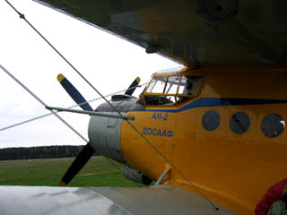
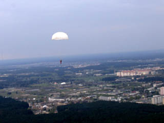
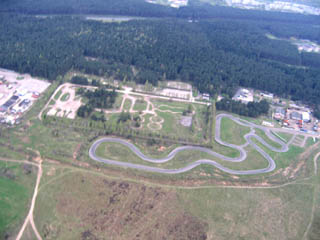
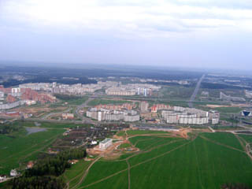

Первый прыжок с парашютом
|  |  |
|  |  |
| Фото: Сергей Коломенкин | |
{kind=link}
{kind=link}
{kind=link}
{kind=link}
История моего первого прыжка такая:
15 мая 2005 года мы впятером приехали на Боровую.Нас долго готовили - примерно часа 4. Сели в самолёт, взлетаем. Самолёт немного качает, иногда мелкие воздушные ямы. Немножко страшно. Следим за высотомером, чтобы запомнить как выглядит высота 100 метров. Потом фоткаем пейзаж в иллюминатор и друг друга в салоне. Нас всего 10. Прыгаем парами. Моя пара последняя - я прыгаю первым. Ika идёт следующей. Немножко жутковато, когда видишь как люди выпадают из самолёта в пустоту один за другим.
Моя очередь. Открытая дверь, поток воздуха. Ничего не слышу. Кричу "Мне прыгать?" - в ответ - кивок. Толчок в пустоту. Это не я... Меня начинает вращать, но перестаёт - стабилизирующий парашютик работет в норме. Самолёта нет. Есть только моё я подвешенное в такой большой комнате километр на километр. На полу нарисована земля.
Ах - да!! Надо же считать... С какого числа начинать говорили? 101,102,103, рывок рукой. Немного дёргает, пытаюсь поднять голову - не получается, стропы перекрутились вокруг оси и мешают. Впрочем стропы меня развернули, парашют вроде раскрыт. Расчековываю запаску. Необходжимость расчековки - самая ясная мысль за весь полёт. Пытаюсь спрятать, ручку от основного парашюта. Оказывается она выдирается с корнем. На всякий случай трос от неё завязываю в узел на лямке.
Вспоминаю, что надо усесться поудобнее. Это оказывается намного сложнее, чем в зале. Тянешь за правые стропы, а тебя начинает качать и наклоняет вправо - страшно и сложно подтянуть лямку под мягкое место. Это единственное место, когда было жутковато.
Вспоминаю, что хотел пофоткать в полёте. Достаю фотик, начинаю фоткать кадре на втором срабатывает автомат расчекованной запаски. Этот факт вообще не запоминается, остаётся только мысль, что сейчас где-то метров 400-500, ещё есть немного времени. Успеваю сделать 6 кадров, когда понимаю, что деревья уже довольно крупные и надо готовится к приземлению.
Объектив задвигается жутко долго. Кричу напарнику, чтобы готовился. Осматриваюсь, в каком направлении меня несёт. Слышу в мегафон "Приготовились к посадке". Поворачиваюсь, слышу "Так и держи, ноги вместе". Присматриваюсь и вижу эту точку с мегафоном.
Трава приближается нарочито медленно и мягко. Ноги вместе, напряжены и немного согнуты. Удар... Боль... падаю, мысленно матерюсь... мысль - загасить парашют, становлюсь на колено и судорожно вытягиваю нижние стропы. Не помогает... Подбегает парень с мегафоном, помогает загасить парашют, взяв его за нижнюю кромку.
Вроде получается встать... Небольшая дрожь в ногах... Мысли все остались ещё где-то в самолёте. В общем состояние вроде шокового. На фоне отвечаю, что понравилось, что с ногами всё вроде в порядке. Мне говорят, что удар был больным, потому, что ветер + у меня мягкие кроссовки, а не жёские бутсы с верхом, как у правильных парашютистов. Рассказывают, что кто-то сломал ногу, кто-то получил сильный вывих.
Очень хочется лечь и лежать в поле на траве. Просто лежать....
Вечером сложно уснуть - в мыслях всё время летишь...
На следующий день половина мыслей всё равно об этом, а вторая всё ещё отсутсвует. Эдакое состояние прострации, начавшееся после толчка от порога самолёта.
Прыгали мы с высоты 900 метров. Всего спуск занимает - 3 сек свободного полёта, 2 минуты спуска и ещё метров 100 подготовка к посадке.
Автор: Сергей Коломенкин